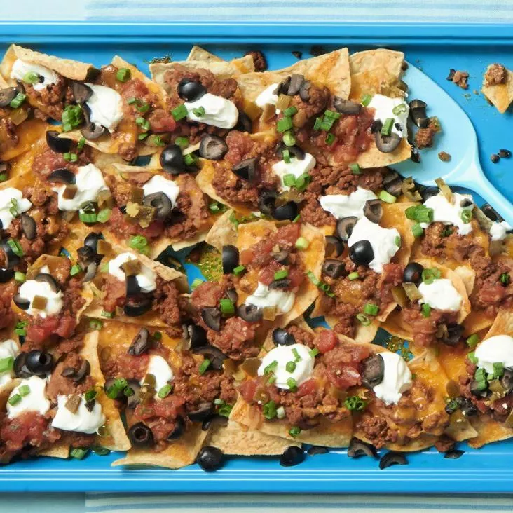

Nachos

Description
Nachos are a classic Tex-Mex dish that's perfect for sharing with friends or enjoying as a snack. They're easy to make and customizable with your favorite toppings. Follow the steps below to make your own nachos:
Ingredients
- Tortilla chips
- Shredded cheese
- Black beans
- Jalapenos
- Tomatoes
- Green onions
- Sour cream
- Guacamole
Steps
- Spread a layer of tortilla chips on a baking sheet.
- Sprinkle shredded cheese over the chips.
- Add black beans, jalapenos, and diced tomatoes.
- Bake in the oven until the cheese is melted and bubbly.
- Top with green onions, sour cream, and guacamole.
- Serve hot and enjoy!